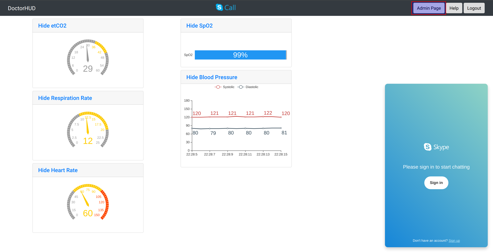
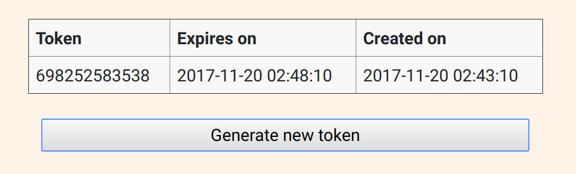
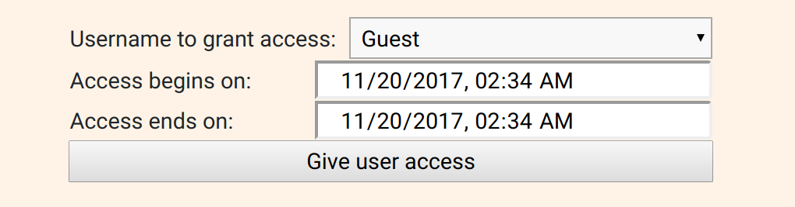

Admin Operation¶
Through the admin page, administrators can generate temporary tokens and set up appointments for existing user accounts. Note that all times on the admin page are displayed in the UTC timezone.
Getting to Admin Page¶
When you are logged in as an administrator, a button labeled “Admin Page” will appear in the banner. Clicking this button will bring you to the admin page.
Generate Token¶
Click the generate token button on the left side.
A token number can be communicated out-of-band to a user, and it will last for up to five minutes. After that, the token expires, and a new one must be generated. Additionally, tokens will expire after being used to log in.
Adding User to Calendar Slot¶
Select the user in the bottom right of the window and alter the “Access begins on” and “Access ends on” times, then click “Give user access” to set the appointment.
Multiple users can access the same room at the same time, provided that they are all recorded in the access table or logged in with tokens.